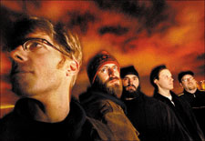

|
|
Article that originally appeared
in Stuff@night,
IT'S ALL IN HOW YOU SAY IT  The name of his band/solo project, Jaime (pronounced "Jime") d'Almeida points out, can be pronounced two ways. You can say it as "TIM-bre," which is how it sounds, or as "TAM-bre," which is how he hears it. No matter, he assures me, both choices are correct. The definition of the word-which more or less means "uniqueness of sound" - befits the flexibility of the approach to saying it. In this regard, the Timbre Project seems just about the perfect moniker for a guy whose entire premise in making his just-released CD, Ruining Perfectly Good Songs (Windjam Records), was based on the individual personalities and perspectives of musical friends and allies who lent a hand. Those friends included local luminaries such as producer/engineer/instrumentalist Pete Weiss, singer Paula Kelley, pedal-steel specialist Tim Obetz, organ player Ken Clark, and a host of other folks who helped d'Almeida make what is one of the best-conceived, sublime-sounding local discs of the year. "My philosophy toward the recording process was not one of control," says d'Almeida, whose revolving-door stage version of the Timbre Project is slated to cover the Rolling Stones' 1978 classic Some Girls album in its entirety March 8 at Toad. "When you're a solo arrtist, you can create this prduct that is exactly within your vision because you have complete control. But what I wanted to do was bring in people and - it sounds corny, but - set them free, and let them play whatever they wanted. I didn't write stuff for them. I told them what the [chord] progression was, what the feeling for the song was, what the subject of the song was. But i let it be a free-flowing process." The result is an immensely satisfying pop album of self-deprecating wit (check out the title), plus a music archivist's library's worth of swooning moods and delicious styles that gleefully knock and bump up against each other. Imagine Pavement and Clem Snide playing touch football with Wheat and the Promise Ring, with Badly Drawn Boy officiating, Beck keeping score, and Ben Folds leading the marching band at halftime. "I'm so tickled that you said that," d'Almeida says of the Beck and Pavement references, in particular, claiming he's a "huge fan" of both artists. "I wish I could write songs like [Pavement's] Steve Malkmus." In fact, much of the singer-songwriter's work carries a laconic, slightly stoned slacker vibe, although there's nothing lax or lazy about the care with which d'Almeida and his ad hoc Timbre Project brought these songs to life. There's the buoyant, sun-kissed jangle and stacked harmonies of "Message Received, Zero Distortion" here, and then organ-frazzled contemplation of "Write This Song" there. The latter is a lament concerning its author's incapability of writing a love song - a notion that d'Almeida immediately disproves with the gorgeous and tender string-embroidered ballad "A Case Against Cloning," and the tweaked acoustic-folk of "Eee-Uh," both written for his finacee. That pair of beauties is easy enough to follow along with and figure out, but, um, what the heck are "Cranky Pants?" D'Almeida laughs. Turns out that, too, was inspired by the object of his affections, who instructs her beau to "take your cranky pants off" when he's feeling grumpy and sour. "Of course, I've decided to write a song and make it about her when she's cranky," he says, a twinge of sweet revenge curling around his voice. As a good, d'Almeida's also sprinkled mock radio-promo spots throughout the disc, with a liner-note invitation for radio stations to request a personalized message. "That was another winking-at-the-world-type thing, because I guess I feel like I should be getting radio airplay, but probably won't," he says. "Although a radio station in Alaska did ask me to do a personalized promo for them." Everybody's got to start somewhere, and if d'Almeida sounds like he's having a good time, it's beacuse he is. The glowing reception accorded the Timbre Project feels especially gratifying, given that the venture follows d'Almeida's six-year run with Five Dollar Milkshake, a Boston outfit that logged roughly 200 shows, but never quite made a sizeable dent in the local music scene. After disbanding the group in 1999, he released a side-project solo album as the Timbre Project. But it was with Ruining Perfectly Good Songs that d'Almeida fully found himself. "Once [Five Dollar Milkshake] broke up, it opened the door to new possibilities," says d'Almeida, who played guitars, bass, keyboards, and percussion on the new record. "The sky was the limit. I'm influenced by different things, and I like to do different things, so for me, it was a release. I really love the recording process, and I love learning about new things, so it was a great transition." The new album, he says, is an expression of "all of these things I wanted to get out [of my system]. At that moment in time, that was what was going on in my head. It's exactly what I was looking for and couldn't have come out any better, as far as I'm concerned. The fact that people like it is fantastic. I'm really pleased about that." So much so that fellow musicians almost immediately began inquiring about the prospect of performing the songs live, even though d'Almeida initially hadn't conceived of the Timbre Project as anything but an on-again, off-again studio project. "I've always felt that if I was going to do another band, I didn't want it to be a burden to the players," he says. "I didn't have any plans to tour with [the Timbre Project], or play live shows. But it was so well-received by my friends, who said, 'if you ever want to play it live, give me a call,' I decided to put a band together. But this isn't a band in the traditional sense - I want to make it as easy as possible for people to back out if they don't want to play a show. But so far, it seems everybody seems really committed to it. I feel so lucky."
|
|
||||||